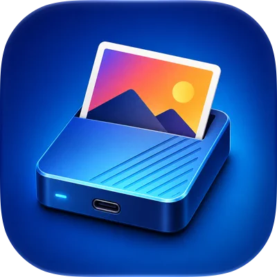

PhotoSSD
Open your Apple Photos library (.photoslibrary) directly from a compatible external SSD. Browse on iPhone or iPad without copying the whole library to your device or uploading it to the cloud.
iPhone · iPad / iOS 17+Independent apps
Independent apps for the devices you already use. Meet PhotoSSD: a way to browse your Mac Photos library from an external SSD on iPhone and iPad.
App collection / 01

Open your Apple Photos library (.photoslibrary) directly from a compatible external SSD. Browse on iPhone or iPad without copying the whole library to your device or uploading it to the cloud.
iPhone · iPad / iOS 17+Our first app
Your Mac Photos library holds years of memories. PhotoSSD is a dedicated viewer that lets you enjoy that collection from an external SSD on your iPhone or iPad.
Explore PhotoSSD →Practical guides
Understand .photoslibrary files, prepare a drive, and check your connection before you start browsing.
Explore the PhotoSSD guides →